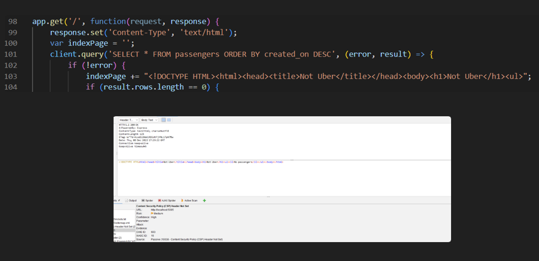
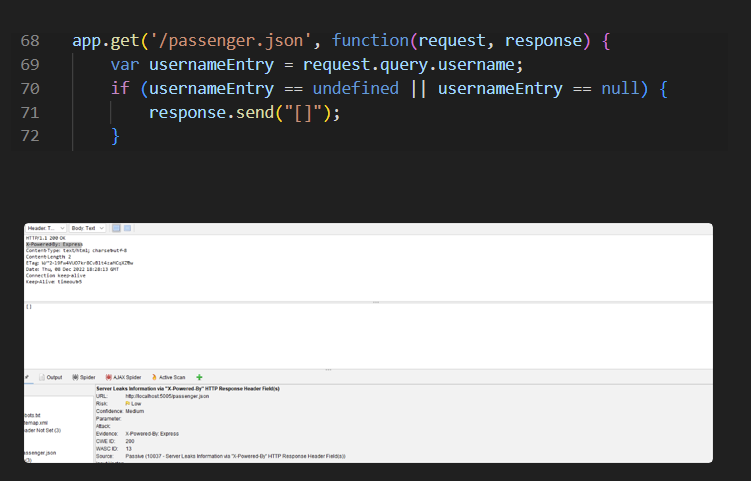
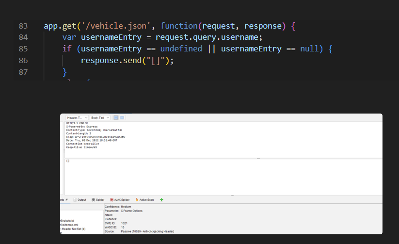
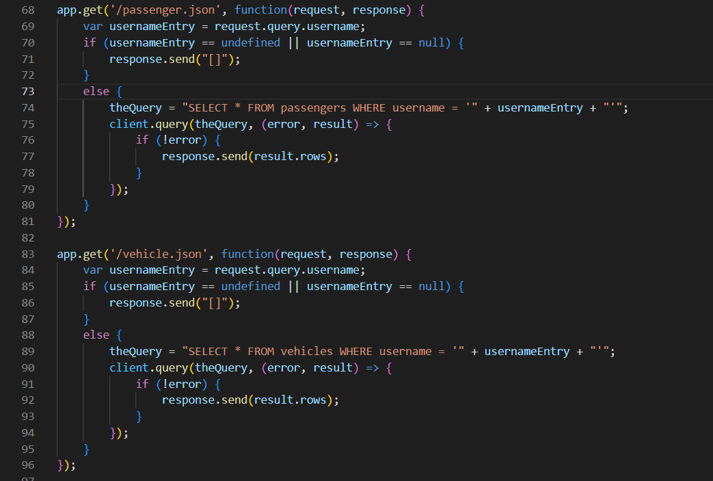

This report provides the security risks that have been found when analyzing the Ride-Hailing site, using the OWASP ZAP tool. The contents of header records were not configured properly. Some of the items such as X-Content-Type-Options and Content Security Policy (CSP) were not defined to include approved data sources and data contents. These could lead to Cross Site Scripting (XSS) and data injection attacks. The response header(s) do not suppress the "X-Power-By" feature and leak information about the website which could lead attackers to identify other frameworks/components that cause vulnerabilities. Additionally, the user inputs are not validated to prevent SQL injection type of attacks throughout the code. The severities for these issues range from low to high, but they can easily be prevented by configuring the headers properly and adding user data validations. The required efforts and financial investment are not significant. Thus, we would recommend your company promptly proceed with the enhancments before actual exploitations are incurred.
In today world, security is an important aspect of any applications or webistes. When the security aspect is not handled with care, it can lead to major issues once the application is deployed to users. It provided opportunities for attackers to exploit vulnerarbilties which would lead to damages for both the companies that developed the applications and for end users. It would result in both financial and psychological damages. With the above, I have been hired to analyze the Ride-Hailing Service to identify risk areas and provide potential solutions. Thus, this report will include four areas that the Ride-Hailing Service company should review and update to minimize vulnerabilities.
To identify risk areas, the OWASP ZAP application is used. Three attack scans are performed:
| Issue | Location | Severity | Description | Proof | Resolution |
|---|---|---|---|---|---|
| The CSP and X-Content-Type-Options Header Not Set | Lines 103, 86, and 71 of the server code | Medium | The CSP and X-Content-Type-Options were not set for the header. |  | The code should be configured to set the CSP and X-Content-Type-Options. |
| Server Leaks Information | Lines 103, 86, and 71 of the server code | Low | The server leaks information via "X-Power-By" HTTP Response Header field when responding to the request of passenger list. This could lead attackers to identify other components of the site. |  | The "X-Power-By" should be suppressed instead of leaving as defaulted. |
| Frame Information Missing | Lines 103, 86, and 71 of the server code | Medium | The responde header for getting the vehicle list does not include CSP with 'frame-ancestor' directive or X-Frame-Options to protect against 'ClickJacking' attacks. |  | Either the the CSP and/or the X-Frame-Options should be configured when sending a response header. |
| Missing User Data Validation | Lines 74-80 and 89-94, of the server code | high | Username is one of the three inputs that are taken from the users and it is a string type. It is also used to query the database. However, there is no code to validate that the actual contents of this field to ensure no SQL injection is included to prevent unauthorized data access. |  | Add code to validate the username's contents |
In conclusion, additional enhancements are required in order to minimize security risks. However, the required efforts to update the code are not significant. It would take a few hours to update the code, a day for penetration testing, and a few hours to coordinate the schedule and time to deploy to users. The final costs for these enhancements will depend on the billing rates of our consultants at the time of execution which will range from $10,00 to $20,000. Once the scope of work is signed, we target to complete the project within two weeks. We would recommend your company to proceed with this investment in order to minimize security risks. You will prevent financial losses, company's brand damages, and users' trusts besides all potential legal issues when your website get exploited.